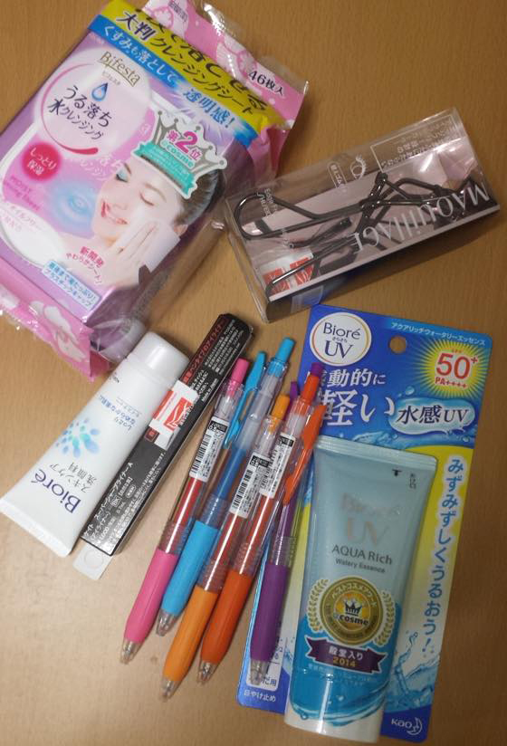
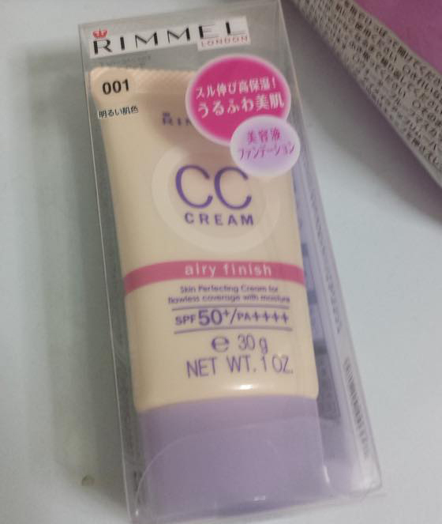
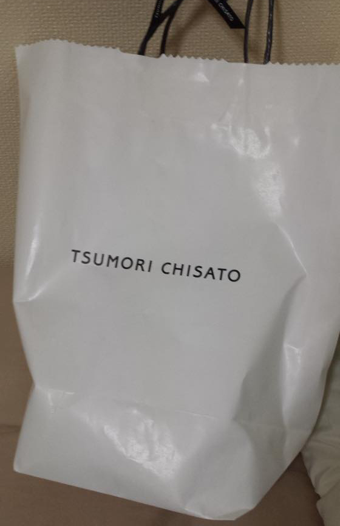
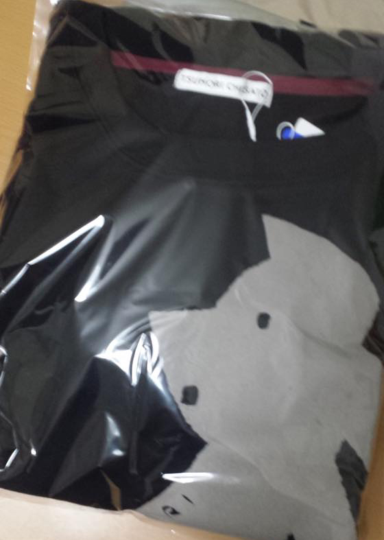
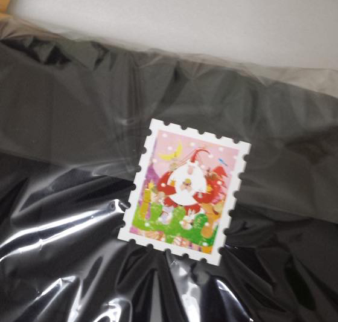
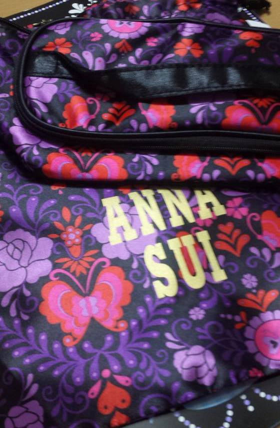
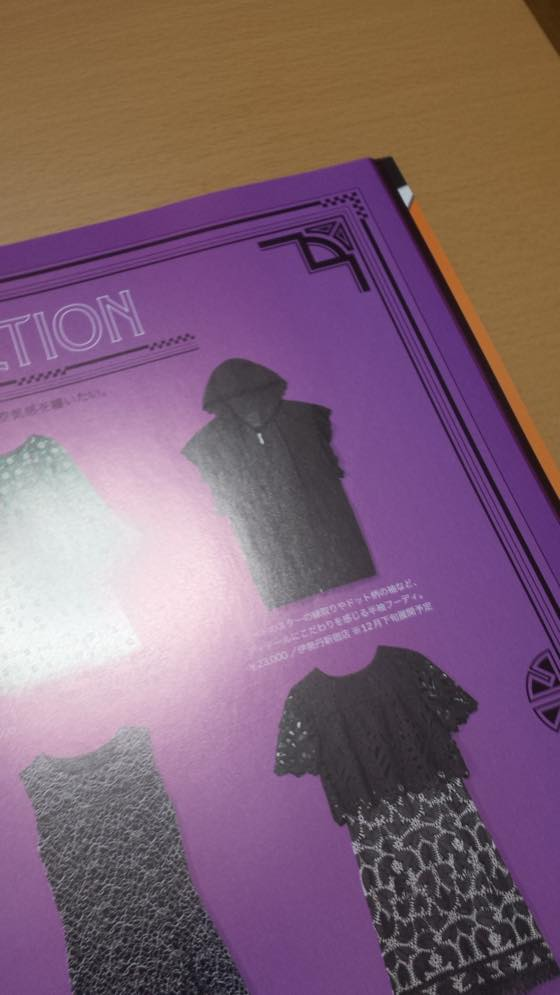
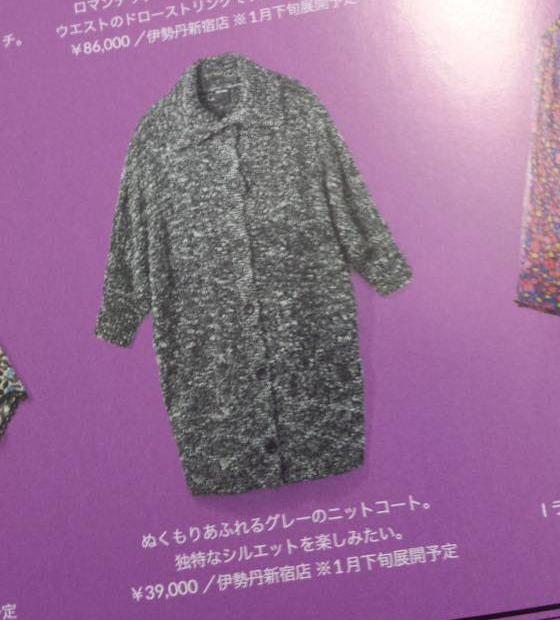
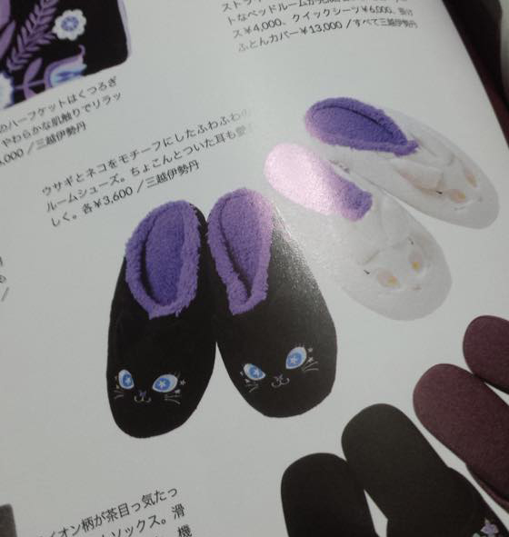
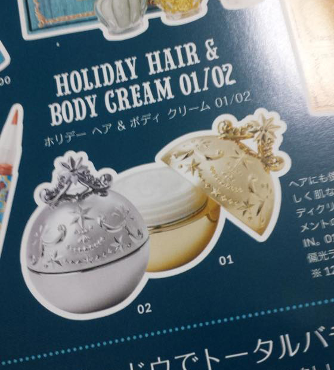

11월 25-28일 디자인 페스타 보러 도쿄댕겨왔습니다.
딱히 새로운 맛집이나 관광에 대한 의지가 없다보니
걍 가던곳 가서 먹던거 먹구 쇼핑하구 돌아왔어요 ^^;;;

Bifesta 클렌징 시트
시세이도 마끼아쥬 뷰러 - 계속 시세이도만 사용하다가 깜장색이 이쁘길래 사봤는데// 이거 느므 맘에듭니다 +_+
비오레 미니 폼클 (세인제를 안챙겨와서 ^^;;;)
케이트 블랙 아이라이너
사라사클립 펜
비오레 UV 아쿠아리치 선크림

작년 여름에 구입해서 정말 잘 쓴 림멜 CC크림 재구입 :3



옷을 하나 사고싶었으나 일본패숑 보다는 전 런던이 쇼핑에 맞나봐요 ;ㅂ;
쇼핑은 런던서 하는게 젤 씐나 ㅋㅋ
애정하는 브랜드 츠모리치사토 가서 원피스 하나 구입했습니다.
무려 마루이한정!!

파우치 준다는 말에 낚여 구입한 안나수이 무크북


이거 내취향 +_+


요 바디크림은 조만간 살거같습니다 케이스때문에(....)
담엔 도쿄말고 다른곳을 가보고 싶습니다 ;ㅂ;